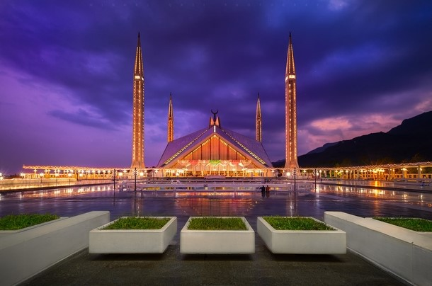
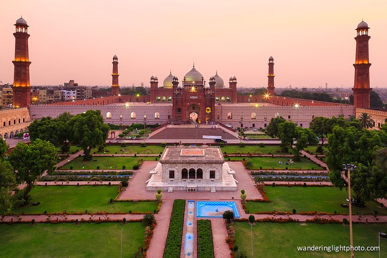
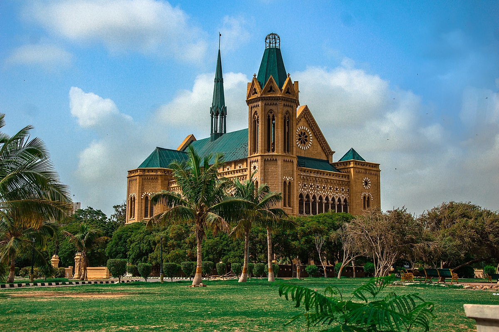
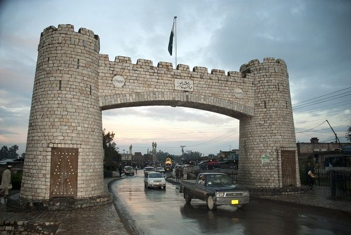

Cities
Islamabad
Islamabad is the capital city of Pakistan, and is federally administered as part of the Islamabad Capital Territory. Islamabad is the ninth largest city in Pakistan, while the larger Islamabad-Rawalpindi metropolitan area is the country's fourth largest with a population of about 7.4 million.Built as a planned city in the 1960s to replace Karachi as Pakistan's capital, Islamabad is noted for its high standards of living, safety, and abundant greenery.
Lahore
Lahore is the capital of the Pakistani province of Punjab, and is the country's 2nd largest city after Karachi, as well as the 18th largest city proper in the world. Lahore is one of Pakistan's wealthiest cities, with an estimated GDP of $58.14 billion (PPP) as of 2015. Lahore is the largest city and historic cultural centre of the wider Punjab region, and is one of Pakistan's most socially liberal, progressive, and cosmopolitan cities.
Karachi
Karachi is the capital of the Pakistani province of Sindh. It is the largest city in Pakistan, and seventh largest city proper in the world. Ranked as a beta-global city, the city is Pakistan's premier industrial and financial centre, with an estimated GDP of $114 billion (PPP) as of 2014. Karachi is Pakistan's most cosmopolitan city, its most linguistically, ethnically, and religiously diverse city, as well as one of Pakistan's most secular and socially liberal cities.
Peshawar
Peshawar is the capital of the Pakistani province of Khyber Pakhtunkhwa and its largest city. Peshawar is also the largest Pashtun-majority city in Pakistan and is bilingual in Pashto and Hindko. Situated in the broad Valley of Peshawar near the eastern end of the historic Khyber Pass, close to the border with Afghanistan, Peshawar's recorded history dates back to at least 539 BCE, making it the oldest city in Pakistan and one of the oldest cities in South Asia.